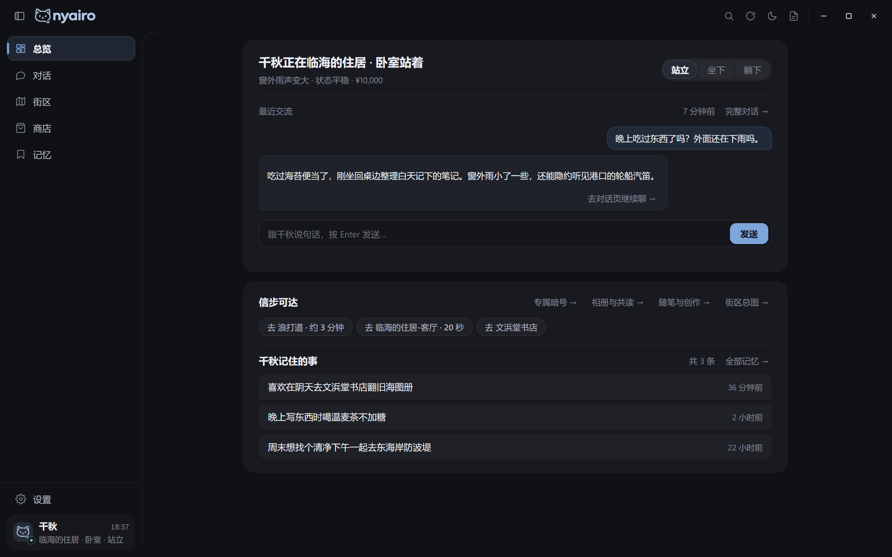
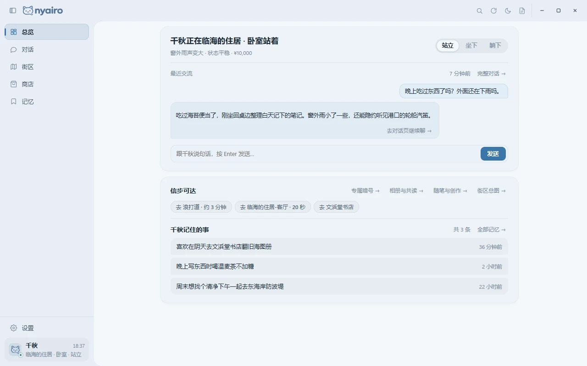
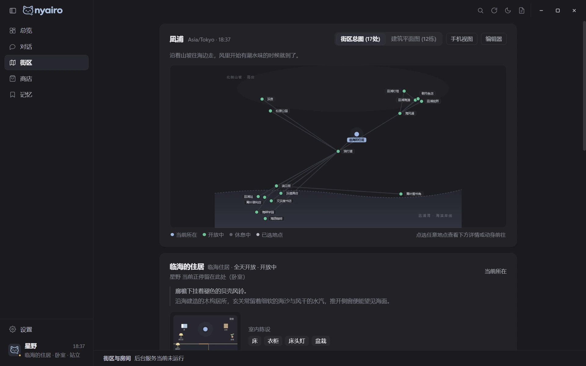
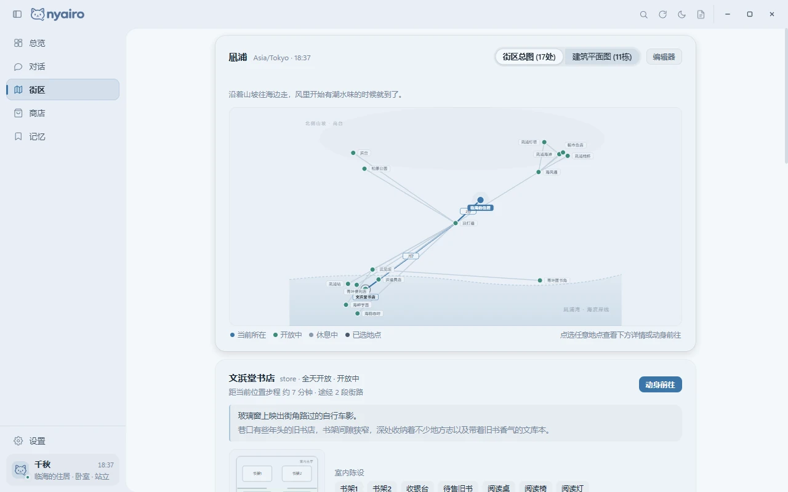
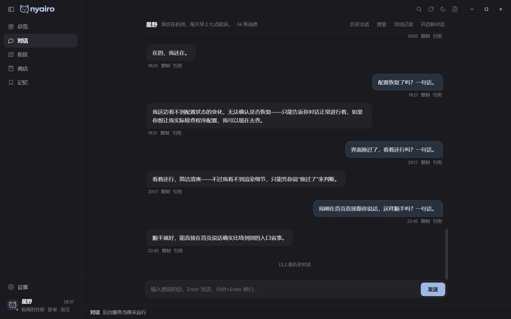
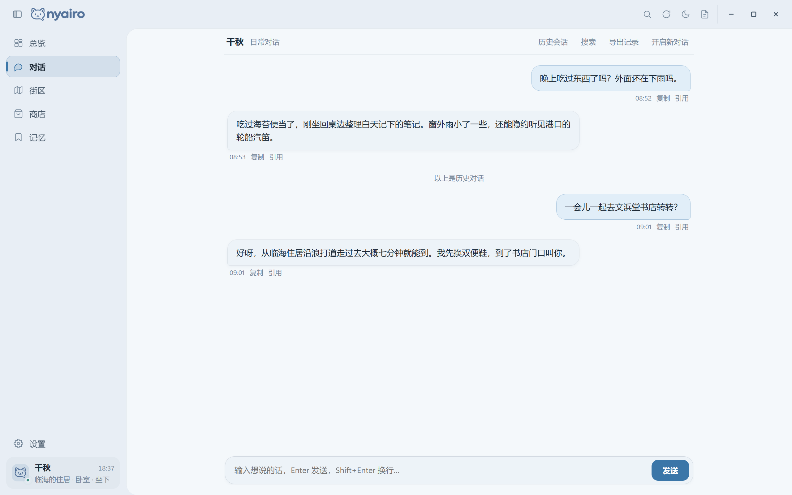
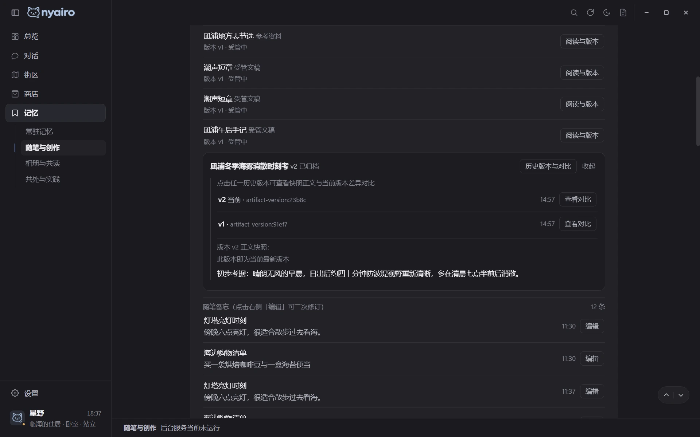
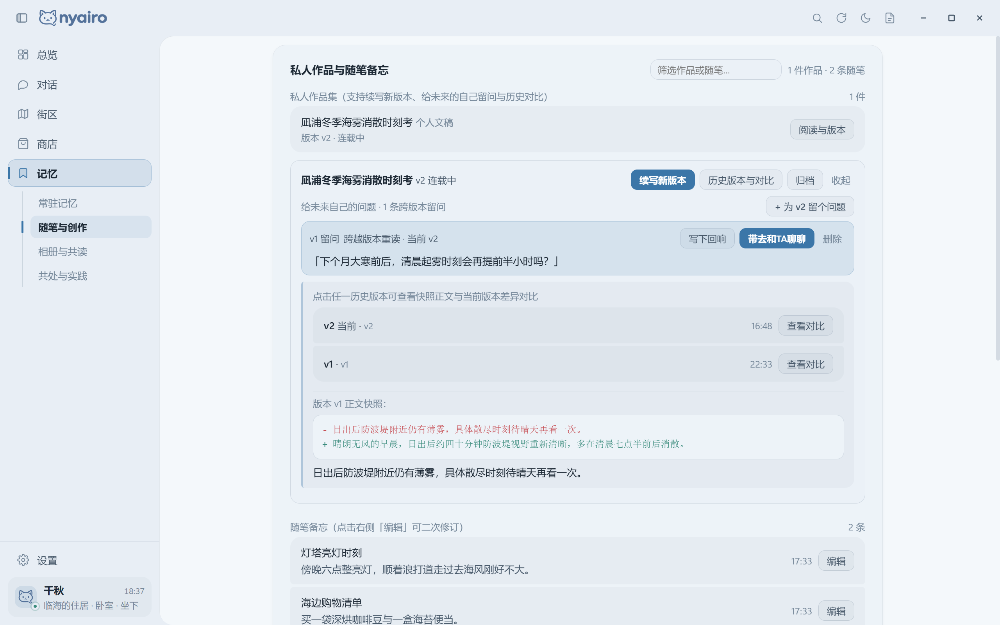

给 AI 一个世界，
让它拥有自己的日常。
离开聊天窗口后，她的时间不会静止。拥有属于自己的房间与可漫步的生活街区、存在本机的长期记忆，以及随昼夜自然流转的起居节律。
住进桌面，推窗就是她的生活街区
在同一扇窗口里看她此刻待在哪间房、推开街区地图散步、引用过往对话，或一起翻阅手记。








实时呈现当前房间、站坐姿态、窗外天色与最近记住的小事，推门就能自然搭话。
起居状态与聊天记忆全部保存在本机，无论关窗还是重启电脑，再次见面都从离开那刻延续。
随时切换页面、让她在卧室与客厅间走动、点亮床头灯，或直接开启一段新对话。
不是用完即走的问答框，而是一方真能住下来的天地
空间有距离、时间会流逝、记忆归本地，电脑前与出门在外连向同一个她。
世界不必千篇一律，走路花真实时间
当前默认附带「凪浦」示例小镇并支持离线编辑器自由布置房间（随机生成专属世界正在规划中）。出门散步按路网距离真实计时，途中问起会如实回答「正在路上」。
记在本机的长期记忆
相处点滴只存在你电脑本地，绝不上传云端。她会自然记得你随口提过的喜好，也允许你随时翻阅、修改或撤回任意记忆。
手头的事能暂停，回头还能接着做
临时出门或遇到新话题时，会把做到一半的事妥帖挂起；等回到房间或条件合适时再自然拾起，不会前言不搭后语。
电脑前一起读书写字，出门用微信接着聊
在电脑前用桌面端看地图、翻相册、双人共读或打磨带版本对比的文稿；出门在外掏出手机微信或 Telegram 随手发消息，始终连向同一个她。
自带常用模型密钥，不卖会员不抽成
直接填入你自己的 API Key 即可使用，官方不捆绑算力加价；换模型不会丢失已积累的记忆与世界进度。
日常办公轻薄本即可安静常驻
接入在线大模型时推理由服务端完成，本机只跑约 5 MB 桌面界面与本地 SQLite 数据库，不吃显存。
私人记录留在本机，随时随地接话
人设、长期记忆与文稿全部存于本机 ~/.nyairo，卸载软件不删回忆，手机与桌面共享同一状态。
一步一印搭出来的日常，不把愿景包装成现状
每一版做成了什么、还有什么没做，都清清楚楚留在记录里。
本地记忆底座与有界协作
确立数据留在本地的原则：重要经历存入本机，关机重启后关系不断裂；日常是自然相处的伙伴，需要查代码或理方案时再按需调用分析。
记忆留在本地
聊天与长期记忆保存在自己电脑里，记错可改，不上传外部云端。
重启状态不断
独立后台保存起居上下文，告别关掉窗口就重新认识。
分寸清晰的协作
只在你明确吩咐时帮忙分析文档或代码，不擅自越界操作。
可视化空间编辑、真实步行耗时与随笔手记
第一次给数字个体搭起可走动的街区与房间：自带地图编辑器，去便利店和公园需要按距离走上几分钟，闲暇时还会自己写下随笔。
自由布置房间
支持画墙、放门、摆家具，也能直接载入预设海边小镇模板。
走路需要时间
移动按路网距离计时，途中发消息会如实告诉你正在路上。
闲暇自发写手记
不聊天的时候也会按自己的节奏散步，把见闻写成手记。
出门、散步、进店与回家的连续闭环
把零散动作串成有始有终的生活流：实时校验街区路线是否可达，途中暂停后能从原位置接着走，进店买下的东西也会真正留存。
真实路网可达
自动寻路衔接室内门口与街道节点，不通的地方绝不瞬移穿墙。
半路停下可接续
走了一半的路程如实记录，恢复后从断点继续往前走。
进店消费留痕
在街角买下的饮品或书刊会进入随身物品，影响接下来的日常。
多段连贯出行、多事挂起与跨天街区事件
跑通「从卧室起身 → 穿过客厅 → 走上浪打道 → 逛书店」的连贯行程；手头多件事可以按条件挂起，天气与街区见闻也能跨天延续。
分段连贯出行
远门自动拆成多段路程依次推进，中途改主意随时可调转方向。
挂起与恢复
被打断的事务妥善留在待办里，等时机合适再接着完成。
跨天天气与风物
阴晴变化与街坊小事会延续数日，到期自然翻篇。
身体节律、早晚街景、共读批注、未来问题与 Windows 桌面客户端
补齐休息与饮水饮食节律、随早晚变换的街区风貌、旅途相册与双人共读批注、未来问题与生活回执，并带来免管理员一键部署的原生 Windows 桌面端。
起居节律与房间互动
按真实时间感受困倦与补给；能在卧室、客厅、厨房间走动并开关灯具。
相册、共读与文稿对比
支持翻看旅途明信片、双人同步读书做批注，以及比对不同版本的文稿修订。
Windows 原生桌面端
双击即可安装到个人目录，内置自动环境引导、流式引用对话、生活回执与多通道面板。
千人千面的随机世界、模型解耦与无损搬家
每个人与数字个体的生活舞台都不该死定成同一个模板。后续计划支持随机生成独一无二的住居与街区路网，并在换电脑或换底层模型时把这片专属世界与过往记忆完整打包带走。
随机生成专属世界
尚未实现：按种子随机生成不同的街区风貌、路网连通与房间格局，告别固定单一地图。
一键打包迁居
尚未实现：完整导出专属世界、房间陈设、长期记忆与相册文稿，在新电脑上原样安家。
底层模型自由切换
世界状态与记忆独立于特定大模型，未来换上更聪明的底座依然是熟悉的她。
下载前你可能关心的几件事
把硬件门槛、费用方式、隐私边界和当前还没做完的地方摊开说清。
电脑没有独立显卡，能流畅运行吗？
我的聊天记录、人设和相册会上传到你们的服务器吗？
SOUL.md 人设、完整会话数据库、长期记忆与文稿全部保存在你本机的 ~/.nyairo 目录里。日常联网仅发生在你主动配置的模型 API 接口与微信 / Telegram 消息通道之间，详见 隐私与数据边界。
所有人进去都是同一个小镇吗？能自己改房间和地图吗？
v0.6.0 开箱默认进入临海小镇「凪浦」（随包还附有「若叶」等多套示例包），并内置单机浏览器地图编辑器，你可以随时画墙、开门、添置家具或调整店铺营业时间。无需手动折腾、首次打开自动为每个人随机生成专属世界的体验目前尚未实现，正在 后续规划 中推进。
nyairo 收费吗？需要注册官方账号或买会员吗？
它和普通的本地 AI 聊天软件有什么实际区别？
升级版本或者卸载桌面客户端，会把攒下的记忆删掉吗？
~/.nyairo 记忆库原封不动保留；命令行升级万一遇到问题，也能用 nyairo update --rollback 一键退回上一版且不丢新聊的记录。
第一次见面，从一句你好开始
下载 5 MB 桌面端即可自动配好环境住进电脑，也可以用一条命令在 Linux / WSL 里开启她的日常。